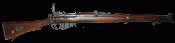
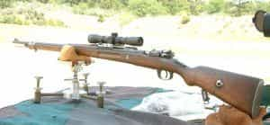
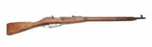
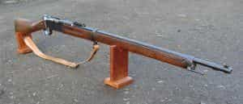
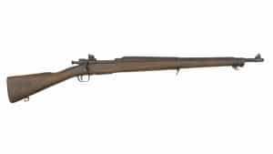

Quintus can be found at qcurtius.com. He is the author of the books On Duties, Thirty Seven, Sallust: The Conspiracy Of Catiline And The War Of Jugurtha, and other books. His work has been reviewed at Taki's Magazine. He can be followed on Twitter


The armies of the belligerents who went to war in 1914 carried rifles that today might be considered quaint. They had handsome wooden finishes, were designed for long-range fire, and were so robust that they could withstand all manner of abuse in the harsh trench environments in which they were used. Some of these rifles are well-known, and others less so. We will sketch a few of the principal services rifles used in Europe from 1914 to 1918. Readers will note here the absence of the service weapons of Italy and Austria-Hungary, but the requirements of space limit us to only the major designs.
We can do no better than to lead off with the “Short Magazine Lee-Enfield” or SMLE. This wonderful rifle is considered by many experts to the best all-around service rifle ever made. Designed in 1907, the weapon used a remarkably smooth bolt action that could, with practice, be operated at a very high rate. Its 10-round detachable box magazine could hold nearly twice as many rounds as other rifles of the period, and the weapon was sighted to about 1,000 yards.

Some models even had an ultra long-range sight used for volley fire to cover open areas; no doubt this was rarely used. In trained hands the rifle could fire off around 15 rounds per minute. Designers wanted a rifle that was shorter than the typical service rifle, but one that also combined most of its features.
The weapon was distributed widely over all parts of the British Empire, as well as to Australia and New Zealand. It was expensive to produce and was manufactured to a very high standard, and examples are still occasionally found in use today in odd corners of the world (e.g., Afghanistan). It may be the greatest bolt-action rifle ever made.
Caliber: 7.7 mm
Weight: 8.7 lb.
Length: 44.6 in.
The venerable Mauser served Germany well not only in the Great War but also in the Second World War. And anyone who has actually handled and fired the weapon can easily understand why. This is a combat rifle, pure and simple. Chambered for Germany’s 7.92 mm round, the Mauser was so robust that it could double as a war-club one minute, and a long range sniper rifle the next.

The bolt action used the front-lug locking system, as well as the “straight-pull” chambering action, which was less convenient than the Lee-Enfield. When the magazine was empty, the bolt locked to the rear and could not be closed unless a new clip was fed into the chamber. Its five-round magazine was not ideal, but in practice this seemed to present few problems with the front-line troops. The weapon was popular enough to be manufactured under license abroad in Spain after the war.
Caliber: 7.92 mm
Weight: 9.26 lb.
Length: 49.2 in.
Russia in 1914 lacked the industrial base to churn out weapons in the same quantity as the other belligerents, but it did its best under the adverse conditions in which it was operating. Accounts exist of whole infantry units being sent to the front with no arms of any kind, and being told to scavenge them from the fallen on the battlefield.

Russia favored rugged weapons that could endure all forms of abuse. Her recruits were typically uneducated conscripts who would need a rifle that required very little training to operate. The Mosin-Nagant rifle fit this bill reasonably well. Its bolt was a two-piece mechanism that worked when it had to, and the weapon provided no luxuries or frills. The bayonet used on the Mosin-Nagant was the old-fashioned “spike” type that used an antiquated socket method of attachment. The Russians have always done things their own way when it comes to small arms design, and the Mosin-Nagant is a rifle that could have been found in no other country but Russia. Examples were in use well into the 1930s.
Caliber: 7.62 mm
Weight: 9.62 lb.
Length: 51.4 in.
France’s Lebel rifle was probably the least effective of all the rifles mentioned here. The reason why is the rifle’s somewhat dangerous tubular magazine: cartridges were laid out one after another in line, with the nose of one pressing up against the firing pin of the other. If the rifle were hit hard enough or dropped at the wrong angle, it was possible for the primer of a cartridge to go off and destroy the weapon or its user. The bolt mechanism was also not nearly as tough as the Mauser or the Lee-Enfield, and required constant maintenance.

The rifle was innovative in one way: it was the first rifle to use smokeless propellant cartridges. This hardly outweighed its other drawbacks, however, and in the final analysis the Lebel can be said to be little more than an adequate service rifle. When one considers that the French Army was also saddled with using the absolutely horrible Chachat light machine gun (probably the worst small arm ever invented), we can hardly fail to have sympathy for the lot of the average poilu.
Caliber: 8 mm
Weight: 9.35 lb.
Length: 52 in.
The United States entered the war rather late and saw comparatively little action when compared with that of the other involved nations. But it was still an economic powerhouse, and wielded considerable influence over its allies. The M1903 Springfield rifle was a handsome, well-made weapon, somewhat mid-range in length between a rifle and a carbine. It was introduced to replace the obsolete Krag-Jorgensen rifle at the turn of the century.

It was very well-made, accurate, and could tolerate a reasonable amount of abuse and immersion in mud. It was not as good as the Lee-Enfield, but it was more accurate at long ranges; for this reason it was still being used as a sniper rifle as late as the Korean War in the early 1950s. As a collector’s item it is highly prized today.
Caliber: 7.62 mm
Weight: 8.69 lb.
Length: 43.2 in.
Read More: The History And Evolution Of Rifles